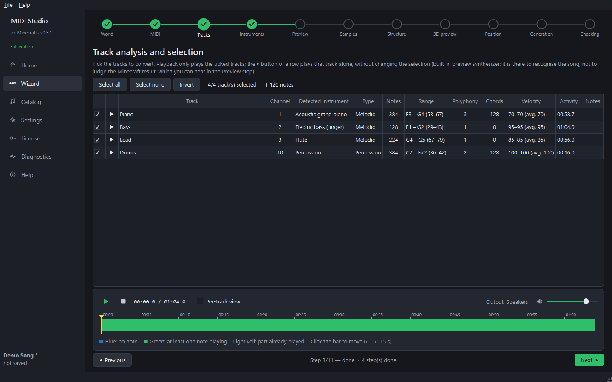

Step 5 — Choose the tracks (wizard step 3)
Goal: keep only the tracks you want in Minecraft, and listen to them.

- Tick the tracks to convert. Buttons: Select all, Select none, Invert.
- Click Play (or press Space) to hear the ticked tracks.
- Click the ▶ button at the start of a row to hear that track alone, without changing the ticks. Click ■ to stop. The coloured bar then shows the notes of that track only.
The timeline
- Blue: no note is playing. Green: at least one note is playing.
- The lighter veil shows the part already played.
- Click the bar to jump anywhere; ← / → move by 5 seconds.
- Per-track view shows one row per ticked track.
The sound stops by itself when you go to another step.
The sound here comes from a small built-in synthesizer: it is only there to recognise the song. The real Minecraft sound is heard in step 5, Preview.
Free edition: up to 3 ticked tracks and 300 played notes.
Next guide: instruments.